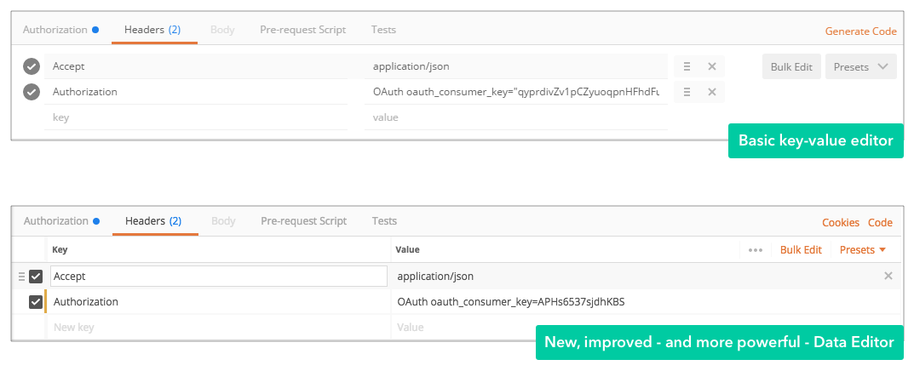
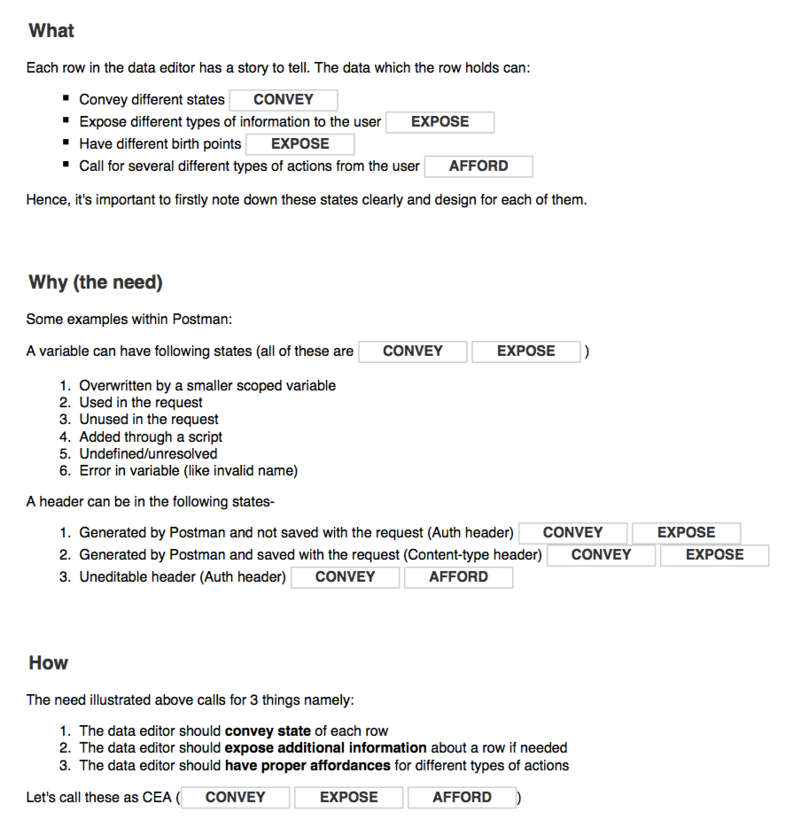
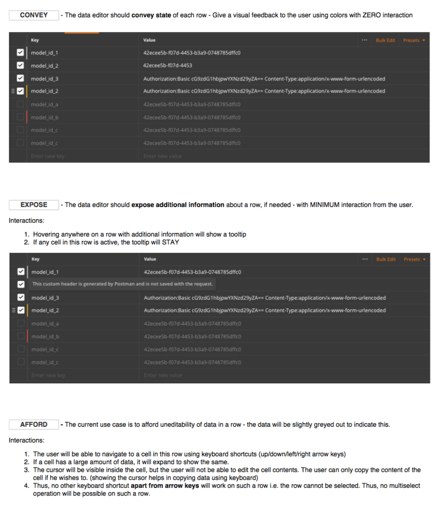

Postman's Data Editor
Conceptualised, designed, and shipped the core component used to manipulate data in Postman.
Responsibilities
As the only designer working on this feature, my responsibilities included:
- Understanding the product and the underlying needs of the users
- Ideation, wireframing and high fidelity mocks: creating high-fidelity mocks and prototypes for the final solution
- Working closely with engineers to ensure high-quality implementation.
- Writing documentation and blog post. Created GIFs (in the blog post) to highlight the usability improvements.
- Consolidating user feedback received via various channels (Slack, Twitter, Github etc.), and using it to push further improvements to the feature
How it started
The most interesting thing about this project is that it did NOT start with a brief 'Redesigning the key-value editor'. We were not thinking of changing our key-value editor. There was no problem we had set to solve. No one even identified 'manipulating data in Postman' as a problem. The Postman app had a basic key-value editor where the key and value fields were like fields of a form. The only way to navigate between the keys and values was by using the 'tab' key, similar to how you'd navigate to fill out a form. There was a separate 'Bulk edit' mode which was used to navigate through the keys and values quickly using the keyboard shortcuts and perform bulk copy-paste actions. This key-value editor was being used at a lot of places in the Postman app since its inception, for example editing variables or request params. Our users were happy with it and we did not receive any feature requests around changing it.
The beginnings
I was working on a project which aimed at streamlining the concept of variables in Postman. Postman has variables with different scopes and it is a very powerful feature, but a lot of people didn't know about variables. For people who did, performing CRUD (Create, Read, Update, Delete) operations on variables was hard and tedious. I went back to the first principles and asked myself - what is it that a user would want to do when he opens the ‘Edit variables’ modal?. The answer was simple. Add, update, remove and view variable values. The key-value editor had limited capabilities, for example, if the variable value was long, there was no way to see the complete value. Postman is a developer product and developers LOVE keyboard shortcuts, but the key-value editor had almost no support for it. Our users had to switch to the 'Bulk Edit' mode to work with data quickly. Enter Spreadsheets - Spreadsheets have been used for data manipulation since ages because of the nice visual structure it provides to the data plus the powerful data editing features it supports. It can be thought of as a nice amalgamation of the 'Key-value edit' (providing visual structure) and the 'Bulk edit' (effective data manipulation) modes.
The eureka moment
It SUDDENLY made so much sense to all of us. Postman is a GUI tool to work with APIs, and working with APIs is effectively like working with data. Thus, creating a spreadsheet like framework as a core data manipulation component felt like an important, and a useful step to take.
The execution
We started building a prototype for this new editor immediately. I made a few designs, laid out the interactions, created a design document for the feature and paired with a developer to build out a prototype. I learned the value of embracing developmental constraints and designing the best possible solution (with low effort and high impact). Every day, we used to play with the prototype, share it with other people in the company, take their feedback and make improvements. Slowly, day by day, the prototype started to become more mature, real and gave good feels. Our hypothesis was getting strengthened. Finally, in a short span of 3 months, after releasing a small beta and rigorous user testing, both within and outside the company, we launched this new editor to production.
 The learnings
Working on Postman’s Data Editor has been an immense learning experience for me. I understood the iterative nature of design. Sometimes it can take several iterations to reach a design which finally 'works'. Creating, sharing with team members, receiving feedback and iterating is the key. There's ALWAYS scope for improvement. The feedback we received on Github, Zendesk, Slack etc. from real users, helped us push improvements to the editor in subsequent app versions. I realised the importance of shipping fast and iterating quickly. Most importantly, while working on a product with such a large user base, I learned the importance of transitioning smoothly from an old to a new version. The older key-value editor had become a part of the muscle memory for all the Postman users, so it was paramount to take careful design decisions to avoid disrupting existing flows. Documenting core workflow changes, and communicating the change effectively to the users was a crucial task here. Thus, for a first version, we tried keeping the precedent functionality intact, while making the editor more powerful and usable. Designing a developer product required me to understand how developers work. For example, developers love keyboard shortcuts, so this was an important consideration for me while designing product features. Routinely interacting with developers over different community channels helped me understand their likes and dislikes.
What's next
The Data Editor has now become a core component of Postman and is being used by more than 4 million developers worldwide. Nothing makes me happier than seeing my work making lives of so many developers easier. Every time I see a user attach a screenshot of the Data Editor on GitHub to provide feedback, I zoom in to understand how they’re using it. The editor has also been extended to support ANY kind of data manipulation (and not just key value pairs), and is now being extended to support editing nested data (for example, JSON) amongst many other things.
Exciting times!